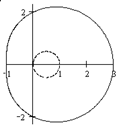

П 10. №7.
Постройте в полярной системе координат линию .
Решение:
Линия представляет собой улитку Паскаля и получается, если каждый радиус-вектор окружности .
Найдем координаты контрольных точек:
.

Ответ: Улитка Паскаля